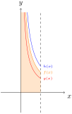

Skip to main content ☰ Contents You! < Prev ^ Up Next > \(\newcommand{\N}{\mathbb N}
\newcommand{\Z}{\mathbb Z}
\newcommand{\Q}{\mathbb Q}
\newcommand{\R}{\mathbb R}
\newcommand{\unknown}{{\color{gray} ?}}
\DeclareMathOperator{\arcsec}{arcsec}
\DeclareMathOperator{\arccot}{arccot}
\DeclareMathOperator{\arccsc}{arccsc}
\newcommand{\tuple}[1]{\left\langle#1\right\rangle}
\newcommand{\lt}{<}
\newcommand{\gt}{>}
\newcommand{\amp}{&}
\definecolor{fillinmathshade}{gray}{0.9}
\newcommand{\fillinmath}[1]{\mathchoice{\colorbox{fillinmathshade}{$\displaystyle \phantom{\,#1\,}$}}{\colorbox{fillinmathshade}{$\textstyle \phantom{\,#1\,}$}}{\colorbox{fillinmathshade}{$\scriptstyle \phantom{\,#1\,}$}}{\colorbox{fillinmathshade}{$\scriptscriptstyle\phantom{\,#1\,}$}}}
\)
Section 5.8 Improper integrals (TI8)
Learning Outcomes
Subsection 5.8.1 Activities
Activity 5.8.1 .
Recall \(\displaystyle \int\frac{1}{x^2}dx=-\frac{1}{x}+C\text{.}\) Compute the following definite integrals.
(a) \(\displaystyle \int_{1/100}^1 \frac{1}{x^2} dx=\left[-\frac{1}{x}\right]_{1/100}^1\)
(b) \(\displaystyle \int_{1/10000}^1 \frac{1}{x^2} dx\)
(c) \(\displaystyle \int_{1/1000000}^1 \frac{1}{x^2} dx\)
Activity 5.8.2 .
What do you notice about
\(\displaystyle \int_{a}^1 \frac{1}{x^2} dx\) as
\(a\) approached 0 in
Activity 5.8.1 ?
\(\displaystyle \int_{a}^1 \frac{1}{x^2} dx\) approaches \(0\text{.}\)
\(\displaystyle \int_{a}^1 \frac{1}{x^2} dx\) approaches a finite constant greater than \(0\text{.}\)
\(\displaystyle \int_{a}^1 \frac{1}{x^2} dx\) approaches \(\infty\text{.}\)
There is not enough information.
Activity 5.8.3 .
Compute the following definite integrals, again using \(\displaystyle \int\frac{1}{x^2}dx=-\frac{1}{x}+C\text{.}\)
(a) \(\displaystyle \int_{1}^{100} \frac{1}{x^2} dx=\left[-\frac{1}{x}\right]_{1}^{100}\)
(b) \(\displaystyle \int_{1}^{10000} \frac{1}{x^2} dx\)
(c) \(\displaystyle \int_{1}^{1000000} \frac{1}{x^2} dx\)
Activity 5.8.4 .
What do you notice about
\(\displaystyle \int_{1}^b \frac{1}{x^2} dx\) as
\(b\) approached
\(\infty\) in
Activity 5.8.3 ?
\(\displaystyle \int_{1}^b \frac{1}{x^2} dx\) approaches \(0\text{.}\)
\(\displaystyle \int_{1}^b \frac{1}{x^2} dx\) approaches a finite constant greater than \(0\text{.}\)
\(\displaystyle \int_{1}^b \frac{1}{x^2} dx\) approaches \(\infty\text{.}\)
There is not enough information.
Activity 5.8.5 .
Recall \(\displaystyle \int\frac{1}{\sqrt x}dx=2\sqrt{x}+C\text{.}\) Compute the following definite integrals.
(a) \(\displaystyle \int_{1/100}^1 \frac{1}{\sqrt{x}} dx=\left[2\sqrt{x}\right]_{1/100}^1\)
(b) \(\displaystyle \int_{1/10000}^1 \frac{1}{\sqrt{x}} dx\)
(c) \(\displaystyle \int_{1/1000000}^1 \frac{1}{\sqrt{x}} dx\)
Activity 5.8.6 .
(a) What do you notice about the integral
\(\displaystyle \int_{a}^1 \frac{1}{\sqrt{x}} dx\) as
\(b\) approached 0 in
Activity 5.8.5 ?
\(\displaystyle \int_{a}^1 \frac{1}{\sqrt{x}} dx\) approaches \(0\text{.}\)
\(\displaystyle \int_{a}^1 \frac{1}{\sqrt{x}} dx\) approaches a finite constant greater than \(0\text{.}\)
\(\displaystyle \int_{a}^1 \frac{1}{\sqrt{x}} dx\) approaches \(\infty\text{.}\)
There is not enough information.
(b)
Activity 5.8.7 .
Compute the following definite integrals using \(\displaystyle \int\frac{1}{\sqrt x}dx=2\sqrt{x}+C\text{.}\)
(a) \(\displaystyle \int_{1}^{100} \frac{1}{\sqrt{x}} dx\left[2\sqrt{x}\right]_{1}^{100}\)
(b) \(\displaystyle \int_{1}^{10000} \frac{1}{\sqrt{x}} dx\)
(c) \(\displaystyle \int_{1}^{1000000} \frac{1}{\sqrt{x}} dx\)
Activity 5.8.8 .
(a) What do you notice the integral
\(\displaystyle \int_{1}^b \frac{1}{\sqrt{x}} dx\) as
\(a\) approached
\(\infty\) in
Activity 5.8.7 ?
(b)
Definition 5.8.9 .
For a function \(f(x)\) and a constant \(a\text{,}\) we let \(\displaystyle \int_a^\infty f(x) dx\) denote
\begin{equation*}
\int_a^\infty f(x) dx=\lim_{b\to\infty}\left( \int_a^b f(x) dx\right)\text{.}
\end{equation*}
If this limit is a defined real number, then we say \(\displaystyle \int_c^\infty f(x) dx\) is convergent . Otherwise, it is divergent .
Similarly,
\begin{equation*}
\int_{-\infty}^b f(x) dx=\lim_{a\to-\infty}\left( \int_a^b f(x) dx\right).
\end{equation*}
Activity 5.8.10 .
Which of these limits is equal to \(\displaystyle\int_1^\infty \frac{1}{x^2} dx\text{?}\)
\(\displaystyle \lim_{b\to\infty}\int_1^b\frac{1}{x^2}dx\)
\(\displaystyle \lim_{b\to\infty}\left[-\frac{1}{x}\right]_1^b\)
\(\displaystyle \lim_{b\to\infty}\left[-\frac{1}{b}+1\right]\)
All of these.
Activity 5.8.11 .
Given the result of
Activity 5.8.10 , what is
\(\displaystyle\int_1^\infty \frac{1}{x^2} dx\text{?}\)
\(\displaystyle 0\)
\(\displaystyle 1\)
\(\displaystyle \infty\)
\(\displaystyle -\infty\)
Activity 5.8.12 .
Does \(\displaystyle\int_1^\infty \frac{1}{\sqrt x} dx\) converge or diverge?
Converges because \(\displaystyle\lim_{b\to 0^+}\left[2\sqrt b-2\right]\) converges.
Diverges because \(\displaystyle\lim_{b\to 0^+}\left[2\sqrt b-2\right]\) diverges.
Converges because \(\displaystyle\lim_{b\to \infty}\left[2\sqrt b-2\right]\) converges.
Diverges because \(\displaystyle\lim_{b\to \infty}\left[2\sqrt b-2\right]\) diverges.
Definition 5.8.13 .
For a function \(f(x)\) with a vertical asymptote at \(x=c>a\text{,}\) we let \(\displaystyle \int_a^c f(x) dx\) denote
\begin{equation*}
\int_a^c f(x) dx=\lim_{b\to c^{-}}\left( \int_a^b f(x) dx\right)\text{.}
\end{equation*}
For a function \(f(x)\) with a vertical asymptote at \(x=c<b\text{,}\) we let \(\displaystyle \int_c^b f(x) dx\) denote
\begin{equation*}
\int_c^b f(x) dx=\lim_{a\to c^{+}}\left( \int_a^b f(x) dx\right)\text{.}
\end{equation*}
Activity 5.8.14 .
Which of these limits is equal to \(\displaystyle\int_0^1 \frac{1}{\sqrt x} dx\text{?}\)
\(\displaystyle \lim_{a\to0^+}\int_a^1\frac{1}{\sqrt x}dx\)
\(\displaystyle \lim_{a\to0^+}\left[2\sqrt x\right]_a^1\)
\(\displaystyle \lim_{a\to0^+}\left[2-2\sqrt a\right]\)
All of these.
Activity 5.8.15 .
Given the this result, what is \(\displaystyle\int_0^1 \frac{1}{\sqrt x} dx\text{?}\)
\(\displaystyle 0\)
\(\displaystyle 1\)
\(\displaystyle 2\)
\(\displaystyle \infty\)
Activity 5.8.16 .
Does \(\displaystyle\int_0^1 \frac{1}{x^2} dx\) converge or diverge?
Converges because \(\displaystyle\lim_{a\to 0^+}\left[-1+\frac{1}{a}\right]\) converges.
Diverges because \(\displaystyle\lim_{a\to 0^+}\left[-1+\frac{1}{a}\right]\) diverges.
Converges because \(\displaystyle\lim_{a\to 1^-}\left[-1+\frac{1}{a}\right]\) converges.
Diverges because \(\displaystyle\lim_{a\to 1^-}\left[-1+\frac{1}{a}\right]\) diverges.
Activity 5.8.17 .
Explain and demonstrate how to write each of the following improper integrals as a limit, and why this limit coverges or diverges.
(a) \(\displaystyle\int_{ -2 }^{ +\infty } \frac{1}{\sqrt{x + 6}} dx.\)
(b) \(\displaystyle\int_{ -4 }^{ -2 } \frac{1}{{\left(x + 4\right)}^{\frac{4}{3}}} dx.\)
(c) \(\displaystyle\int_{ -5 }^{ 0 } \frac{1}{{\left(x + 5\right)}^{\frac{5}{9}}} dx.\)
(d) \(\displaystyle\int_{ 10 }^{ +\infty } \frac{1}{{\left(x - 8\right)}^{\frac{4}{3}}} dx.\)
Fact 5.8.18 .
Suppose that \(0< p\) and \(p\neq 1\text{.}\) Applying the integration power rule gives us the indefinite integral \(\displaystyle \int \frac{1}{x^p} dx=\frac{1}{(1-p)}x^{1-p}+C\text{.}\)
Activity 5.8.19 .
(a) If \(0< p< 1\text{,}\) which of the following statements must be true? Select all that apply.
\(\displaystyle 1-p< 0\)
\(\displaystyle 1-p> 0\)
\(\displaystyle 1-p< 1\)
\(\displaystyle \int_1^\infty \frac{1}{x^p} dx\) converges.
\(\displaystyle \int_1^\infty \frac{1}{x^p} dx\) diverges.
(b) If \(p>1\text{,}\) which of the following statements must be true? Select all that apply.
\(\displaystyle 1-p< 0\)
\(\displaystyle 1-p> 0\)
\(\displaystyle 1-p< 1\)
\(\displaystyle \int_1^\infty \frac{1}{x^p} dx\) converges.
\(\displaystyle \int_1^\infty \frac{1}{x^p} dx\) diverges.
Activity 5.8.20 .
(a) If \(0< p< 1\text{,}\) which of the following statements must be true?
\(\displaystyle \int_0^1 \frac{1}{x^p} dx\) converges.
\(\displaystyle \int_0^1 \frac{1}{x^p} dx\) diverges.
(b) If \(p>1\text{,}\) which of the following statements must be true?
\(\displaystyle \int_0^1 \frac{1}{x^p} dx\) converges.
\(\displaystyle \int_0^1 \frac{1}{x^p} dx\) diverges.
Activity 5.8.21 .
Consider when \(p=1\text{.}\) Then \(\frac{1}{x^p}=\frac{1}{x}\) and \(\displaystyle \int \frac{1}{x^p}\ dx=\displaystyle \int \frac{1}{x}\ dx=\ln|x|+C\text{.}\)
(a) What can we conclude about \(\displaystyle \int_1^\infty \frac{1}{x} dx\text{?}\)
\(\displaystyle \int_1^\infty \frac{1}{x} dx\) converges.
\(\displaystyle \int_1^\infty \frac{1}{x} dx\) diverges.
There is not enough information to determine whether this integral converges or diverges.
(b) What can we conclude about \(\displaystyle \int_0^1 \frac{1}{x} dx\text{?}\)
\(\displaystyle \int_0^1 \frac{1}{x} dx\) converges.
\(\displaystyle \int_0^1 \frac{1}{x} dx\) diverges.
There is not enough information to determine whether this integral converges or diverges.
Fact 5.8.22 .
Activity 5.8.23 .
Consider the plots of \(f(x), g(x), h(x) \) where \(0 < g(x) < f(x) < h(x)\text{.}\)
Figure 112. Plots of \(f(x), g(x), h(x)\)
If \(\displaystyle \int_1^\infty f(x) dx\) is convergent, what can we say about \(g(x), h(x)\text{?}\)
\(\displaystyle \int_1^\infty g(x) dx\) and \(\displaystyle \int_1^\infty h(x) dx\) are both convergent.
\(\displaystyle \int_1^\infty g(x) dx\) and \(\displaystyle \int_1^\infty h(x) dx\) are both divergent.
Whether or not \(\displaystyle \int_1^\infty g(x) dx\) and \(\displaystyle \int_1^\infty h(x) dx\) are convergent or divergent cannot be determined.
\(\displaystyle \int_1^\infty g(x) dx\) is convergent and \(\displaystyle \int_1^\infty h(x) dx\) is divergent.
\(\displaystyle \int_1^\infty g(x) dx\) is convergent and \(\displaystyle \int_1^\infty h(x) dx\) could be either convergent or divergent.
Activity 5.8.24 .
Consider the plots of
\(f(x), g(x), h(x) \) where
\(0 < g(x) < f(x) < h(x)\text{.}\)
Figure 113. Plots of \(f(x), g(x), h(x)\) If
\(\displaystyle \int_1^\infty f(x) dx\) is divergent, what can we say about
\(g(x), h(x)\text{?}\)
\(\displaystyle \int_1^\infty g(x) dx\) and \(\displaystyle \int_1^\infty h(x) dx\) are both convergent.
\(\displaystyle \int_1^\infty g(x) dx\) and \(\displaystyle \int_1^\infty h(x) dx\) are both divergent.
Whether or not \(\displaystyle \int_1^\infty g(x) dx\) and \(\displaystyle \int_1^\infty h(x) dx\) are convergent or divergent cannot be determined.
\(\displaystyle \int_1^\infty g(x) dx\) could be either convergent or dicergent and \(\displaystyle \int_1^\infty h(x) dx\) is divergent.
\(\displaystyle \int_1^\infty g(x) dx\) is convergent and \(\displaystyle \int_1^\infty h(x) dx\) is divergent.
Activity 5.8.25 .
Consider the plots of
\(f(x), g(x), h(x) \) where
\(0 < g(x) < f(x) < h(x)\text{.}\) 
Figure 114. Plots of \(f(x), g(x), h(x)\) If
\(\displaystyle \int_0^1 f(x) dx\) is convergent, what can we say about
\(g(x)\) and
\(h(x)\text{?}\)
\(\displaystyle \int_0^1 g(x) dx\) and \(\displaystyle \int_0^1 h(x) dx\) are both convergent.
\(\displaystyle \int_0^1 g(x) dx\) and \(\displaystyle \int_0^1 h(x) dx\) are both divergent.
Whether or not \(\displaystyle \int_0^1 g(x) dx\) and \(\displaystyle \int_0^1 h(x) dx\) are convergent or divergent cannot be determined.
\(\displaystyle \int_0^1 g(x) dx\) is convergent and \(\displaystyle \int_0^1 h(x) dx\) is divergent.
\(\displaystyle \int_0^1 g(x) dx\) is convergent and \(\displaystyle \int_0^1 h(x) dx\) can either be convergent or divergent.
Activity 5.8.26 .
Consider the plots of
\(f(x), g(x), h(x) \) where
\(0 < g(x) < f(x) < h(x)\text{.}\)
Figure 115. Plots of \(f(x), g(x), h(x)\) If
\(\displaystyle \int_0^1 f(x) dx\) is dinvergent, what can we say about
\(g(x)\) and
\(h(x)\text{?}\)
\(\displaystyle \int_0^1 g(x) dx\) and \(\displaystyle \int_0^1 h(x) dx\) are both convergent.
\(\displaystyle \int_0^1 g(x) dx\) and \(\displaystyle \int_0^1 h(x) dx\) are both divergent.
Whether or not \(\displaystyle \int_0^1 g(x) dx\) and \(\displaystyle \int_0^1 h(x) dx\) are convergent or divergent cannot be determined.
\(\displaystyle \int_0^1 g(x) dx\) can be either convergent or divergent and \(\displaystyle \int_0^1 h(x) dx\) is divergent.
\(\displaystyle \int_0^1 g(x) dx\) is convergent and \(\displaystyle \int_0^1 h(x) dx\) is divergent.
Fact 5.8.27 .
Let \(f(x), g(x)\) be functions such that for \(a<x<b\text{,}\) \(0\leq f(x) \leq g(x)\text{.}\) Then
\begin{equation*}
\displaystyle 0\leq \int_a^b f(x) dx\leq \int_a^b g(x) dx\text{.}
\end{equation*}
In particular:
If \(\int_a^b g(x)dx\) converges, so does the smaller \(\int_a^b f(x)dx\text{.}\)
If \(\int_a^b f(x)dx\) diverges, so does the bigger \(\int_a^b g(x)dx\text{.}\)
Activity 5.8.28 .
Compare \(\frac{1}{x^3+1}\) to one of the following functions where \(x>2\) and use this to determine if \(\displaystyle \int_2^\infty \frac{1}{x^3+1}dx\) is convergent or divergent.
\(\displaystyle \displaystyle\frac{1}{x}\)
\(\displaystyle \displaystyle\frac{1}{\sqrt{x}}\)
\(\displaystyle \displaystyle\frac{1}{x^2}\)
\(\displaystyle \displaystyle\frac{1}{x^3}\)
Activity 5.8.29 .
Comparing \(\frac{1}{x^3-4}\) to which of the following functions where \(x>3\) allows you to determine that \(\displaystyle\int_3^{\infty} \dfrac{1}{x^3-4}\ dx\) converges?
\(\displaystyle \displaystyle\frac{1}{x^3+x}\)
\(\displaystyle \displaystyle\frac{1}{4x^3}\)
\(\displaystyle \displaystyle\frac{1}{x^3}\)
\(\displaystyle \displaystyle\frac{1}{x^3-x^3/2}\)
Activity 5.8.30 .
(a) Find \(\displaystyle \int_{\pi/2}^a \cos(x)dx\text{.}\)
(b) Which of the following is true about \(\int_{\pi/2}^\infty \cos(x)dx\text{?}\)
\(\displaystyle \int_{\pi/2}^\infty \cos(x)dx\) is convergent.
\(\displaystyle \int_{\pi/2}^\infty \cos(x)dx\) is divergent.
More information is needed.
Subsection 5.8.2 Videos
Figure 116. Video: I can compute improper integrals, \(p>1\)
Figure 117. Video: I can compute improper integrals, \(p < 1\)